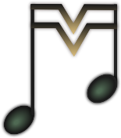

Born in Serbia where he gets Bachelor degree as a professional horn player at Academy of Arts in Novi Sad. Versitile as both a musical perfmorer and self-taught composer, he came upon idea of creating a website that will serve as platform of learning for fellow music lovers. It gives a brief set of guide lines for your further exploration of classical music. MusInsight is a product of musician's expirience of taking part in orchestras and chamber ensambles combined with analitic knowledge.